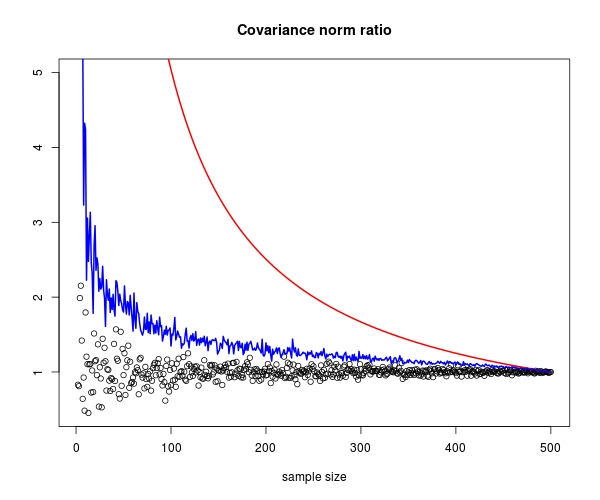

View the Project on GitHub bwlewis/covar
Mike Kane and Bryan W. LewisWe present some mostly non-statistical notes on covariance. The notes work towards some bounds on the proportion of overall covariance captured by subsets of rows of a data matrix. We're interested in that because of recent big data approaches that partition large data matrices along their rows.
These are working notes. We'll continue to tweak and revise them.
Covariance is a matrix-valued function of a data matrix $X\in\mathbb{R}^{m\times n}$, $cov:\mathbb{R}^{m\times n} \rightarrow \mathbb{R}^{n\times n}$, defined as: \[ cov(X) = \frac{1}{m-1}\left(X - e e^TX/m\right)^T\left(X - e e^TX/m\right), \] where $e = (1,1,\ldots,1)^T\in \mathbb{R}^m$. The expression $e^TX/m$ produces a vector of column means of the matrix $X$, and $X - ee^TX/m$ subtracts the mean from each column, returning a so-called "centered" matrix with zero column means.
We think of the rows of the data matrix as independent observations or measurements of some events or things, and the columns as features or variables that we can measure.
We assume in this note that $m > n$.
This means that we expect that subsets of the rows of the data matrix have, on average, the same column means. Small samples of rows might deviate from this, but in the long run the i.i.d. assumption means that these deviations average out. Let's illustrate this simple idea with a short example in R:
library("mvtnorm")
# Generate a 500x2 matrix witn known covariance structure and IID rows:
set.seed(1)
sigma = matrix(c(4,2,2,3), ncol=2)
x = rmvnorm(n=500, mean=c(1,2), sigma=sigma)
colMeans(x)
[1] 0.9492868 1.9916602
# Any one small sample might deviate from this:
colMeans(x[sample(500,20),])
[1] 1.206864 2.494555
# But, in the long run the deviations average out, even for small samples:
apply(replicate(100, colMeans(x[sample(500,20),])), 1, mean)
[1] 0.9520979 2.0058471
Denote a matrix consisting of a sample of $k$ rows of $X$ by
$X_k\in\mathbb{R}^{k\times n}$. A more formal way of stating our observation
about i.i.d. rows is that
\[
e^TX/m \approx e_k^TX_k/k,
\]
where $e_k = (1,1,\ldots,1)^T\in\mathbb{R}^k$.
Now assume that our data matrix $X$ has already been centered and its
column means are zero—that is, $e^TX/m=0$. Then
\[
cov(X) = \frac{1}{m-1}X^TX,
\qquad \mathrm{and,} \qquad
cov(X_k) \approx \frac{1}{k-1}X_k^TX_k.
\]
This note is interested in comparing $cov(X)$ with $cov(X_k)$ for various row
sampling sizes $k$.
OK, define $\alpha(k) = (m-1)/(k-1)$ let $X = U\Sigma V^T$ be the usual singular value decomposition of $X$, where $U^TU = V^TV = I$, and $\Sigma$ is a diagonal matrix with diagonal values $\sigma_1 \ge \sigma_2 \ge \cdots \ge 0$. Let $U_k$ denote the conformable row sample of the $U$ matrix matching $X_k$. Not that although $X_k = U_k \Sigma V^T$, this is not an SVD of $X_k$ because, in general when $k \lt m$, $U_k$ does not have orthonormal columns.
With all that we can derive the following bound: \begin{eqnarray} \frac{\|cov(X_k)\|}{\|cov(X)\|} &\approx& \frac{(k-1)^{-1}\|X_k^TX_k\|}{(m-1)^{-1}\|X^T X\|} \\ &=&\alpha(k) \frac{\|V\Sigma U_k^T U_k \Sigma V^T\|}{\| V\Sigma U^T U\Sigma V^T \|}\\ &=&\alpha(k) \frac{\|\Sigma U_k^T U_k \Sigma\|}{\|\Sigma^2\|}\\ &=& \frac{\alpha(k)}{\sigma_1^2} \|\Sigma U_k^T U_k \Sigma \| \\ &\le& \alpha(k) \| U_k^T U_k \|. \end{eqnarray} We use the fact that $U$ has orthonormal columns, that $V$ is an orthonormal matrix, and that the spectral norm is invariant under matrix multiplication by orthonormal matrices above.
The function $\alpha(k)$ is pretty simple, but the behavior of the norm of $U_k^T U_k$ is less obvious. As $k$ varies from 1 to $m$, it's monotonically non-decreasing between zero and 1, and its growth depends on the data and on the ratio of $m$ to $n$. Before exploring that in more detail, let's observe this bound with a simple numerical experiment to at least validate its plausibility.
# Set up an example matrix x with sampled iid rows and known covariance structure
v = qr.Q(qr(matrix(rnorm(100),10)))
d = exp(-(1:10))
sigma = v %*% diag(d) %*% t(v)
library("mvtnorm")
x = rmvnorm(n=500,mean=1:10,sigma=sigma)
# Generate some row samples
set.seed(1)
i = lapply(rep(seq(from=2,to=500,by=1),1), function(j) list(j=j,idx=sample(500,j)))
# Plot the ratio of row sample covariance norms to the full matrix covariance norm
ncx = norm(cov(x),"2")
a = t(sapply(i, function(j) c(j$j,norm(cov(x[j$idx,]),"2"))))
plot(a[,1], a[,2]/norm(cov(x),"2"), main="Covariance norm ratio", xlab="sample size")
# Our upper bound
s = svd(x)
alpha = t(sapply(i, function(j) c(j$j,(499/(j$j-1))*norm(crossprod(s$u[j$idx,]),"2"))))
lines(alpha[,1],alpha[,2], col=2,lwd=2)

Permission is granted to copy, distribute and/or modify this document under the terms of the GNU Free Documentation License, Version 1.3 or any later version published by the Free Software Foundation; with no Invariant Sections, no Front-Cover Texts, and no Back-Cover Texts. A copy of the license is included in the Github project files.